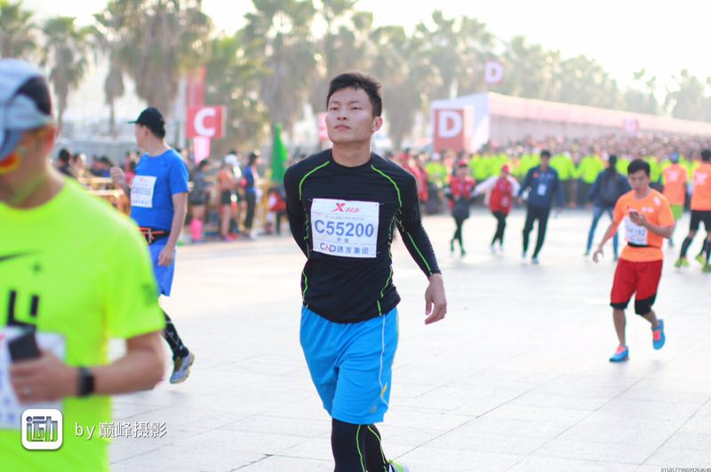
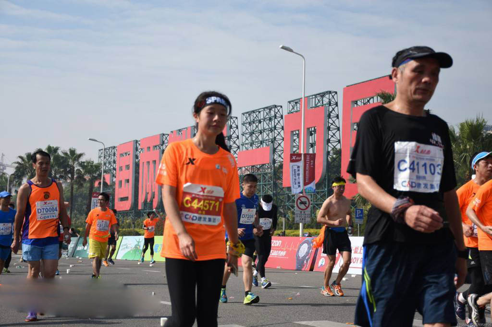

2017新年伊始，第15届厦门国际马拉松赛鸣枪开跑。被称作国内最美路线的国际田联金标赛事，此次厦门国际马拉松赛吸引了来自世界各地三万多名参赛选手开启“新年第一跑”。我实验室2015级研究生杜宝林以及2016级研究生余宪积极响应，相继报名参加了本次马拉松。作为我实验室出类拔萃的研一新生，这已经是余宪同学参加的第二次厦门国际马拉松赛，以坚韧的品质坚持了下来。
作为2017年国内第一个开跑的马拉松赛事，本届厦门国际马拉松赛今年首次升级为全程全马赛事，进一步提高了赛事的影响力。 42.195公里的坚持，厦门马拉松也成为了千万跑者心中的梦想，挑战自我的兴奋、永不放弃的坚定以及跨过完赛终点线的激动，成为每个人人生中的特别财富和记忆烙印。
青春不减，不断突破
我实验室2015级研究生杜宝林学长平时在科研的同时也注重身体健康，每周都坚持锻炼。跑步使本来就开朗的杜宝林更加自信、成熟。每到周末，他便风雨无阻地参加马拉松训练，在鹭海之畔、公寓运动场，经常能看到他健步疾飞的身影。他还经常组织跑友一同进行马拉松训练，总是在对方精疲力尽之时递上一把手给予鼓励坚持。在晨夕之际，杜宝林用双腿感受了运动之美；在学习研究之余，他得到了放松，体会到初晨空气的爽朗与安逸

就是这么一位用坚强毅力奔跑的年轻学长，充满活力和张力，不断在挑战自我、坚忍不拔、永不放弃 的马拉松运动精神激励下，一次又一次在马拉松赛道上拼搏，最终用4小时44分成功完赛马拉松赛事的成绩单和奖牌，向自己的弱冠之年献上了人生厚礼。韶华不为少年留，正值青春之际，何不拼一把。
巾帼不让须眉，赛场木兰别样美
绕着鹭海之畔跑上一个来回、连续两个月每个两三天跑20多公里，不知不觉这已经成为了余宪的标志了——我实验室的研一女孩余宪可以说是大家都熟知的跑步达人了，在全校跑友圈也小有名气，朋友圈里的跑步记录更是鼓励了更多人来参与运动。不管是学习生活还是跑步，她总是给人马不停蹄的感觉。她说，爱跑步的女孩运气不会太差。尽管近几周厦门清晨气温低到接近10度，但余宪依然无惧严寒，早早来到位于环岛珍珠湾，沿着静谧、清澈的鹭江河畔一路向前，开始了当天的马拉松锻炼，遵从自己的步调，健身、跑步，只为努力变成更好的自己。

本次厦门马拉松赛中，余宪以4小时36分钟38秒的优秀成绩完成了自我挑战。关于未来还要跑多少个马拉松，余宪说自己并不知道，她只是想一直跑下去，去挑战更多未知和极限。“不追求速度，我只是享受这个过程。”我问余宪， “如何才能坚持一直跑步？”余宪说，“真正喜欢的事不需要坚持，不喜欢的怎么也坚持不了。”这正是丁兴号教授一直跟我们说的。